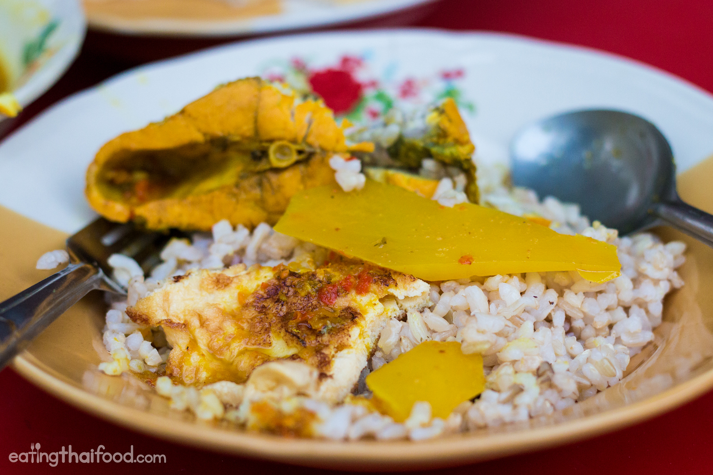

Southern Thai Gaeng Som (Sour Spicy Fish Curry)

Description
This is a sour water base curry that very popular in southern Thai kitchen. It will pair best with the fishsause on the warm Jasmine rice.
Ingredient
- Any meat that you like prefer fish or shrimp
- Water 1.5- 2L
- Green papaya
- Salt 1 tbsp
- Shrimp paste 1 tbsp
- Lime juice
For the soup paste:
- 1 head garlic
- 20 grams turmeric
- 60 grams of Thai chili : prik kee noo khao
- 2 shallot
Steps
For the curry paste:
- Begin by making the curry paste. Peel the stems off all the chilies, then add them to a blender or food processor.
- Peel the garlic, and shallots, and cut the turmeric into pieces, and toss them all into the blender.
- Add about a cup of water, and blend for a few seconds until pureed.
NOTE: Be warned that turmeric stains, so don't use a nice blender!
For the soup:
- To prepare the green papaya, first peel the outer green skin, rinse it in water to remove the sap, then shave off thin bite sized pieces of papaya so you have thin wedges. Cut the papaya like you're whittling a piece of wood. Then set aside.
- For the limes, slice and squeeze them into a separate bowl.
- Put a big soup pot on the stove and turn to medium heat, and add in all the curry paste you just blended.
- Add 2 liters of water to the soup, using some of the water to rinse out the blender, and add to the pot.
- Add the shrimp paste, and stir the soup to make sure the shrimp paste fully dissolves.
- Take the green papaya, add it all to the soup, stir quickly, then put the cover on to bring to a boil.
- Once the gaeng som is boiling, gently add the pieces of fish.
- But here's the Thai Aunty trick - don't stir the soup until the fish is fully cooked. If you stir the soup when the fish is still raw, your soup will taste fishy (according to Thai cooking practice).
- Boil the soup, without stirring, for about 5 - 8 minutes.
- When the fish is finished cooking, you can stir gently, and then turn off the stove pretty quickly so you don't overcook the fish.
- Once your heat is off, it's time to season with salt and lime juice. Add some at first, stir gently, taste test, then add more if needed.
- Taste test until your gaeng som is sour, slightly salt, and extremely spicy.
Credit:
Easingthaifood.com